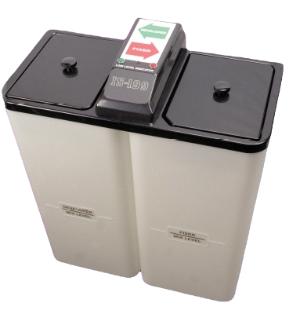
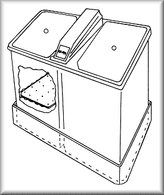
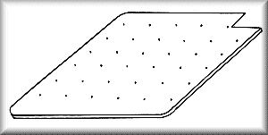

IS-199 Chemical Mixers
A versatile Chemical Mixer for use with:

- X-Ray
- Graphic Arts
- Photo Products
- One year warranty on all parts
Technical Specifications
The IS-199 incorporates a unique combination of features which make it the Mixer of Choice for both the user and the serviceman.
The Specific Gravity Mixing System allows the user to start a mix anytime.
The mixer responds to the addition of concentrated chemicals and adds the correct amount of water automatically.
All Electronic Components have been chosen for dependability.
Straight-forward circuit designs eliminate the need for circuit boards thereby increasing reliability.
The Low Level Warning System indicates that solution level is 2.0 gallons or less.
The warning system resetsautomatically when the user begins a 5 or 10 gallon mix.
Features
- Specific Gravity Mixing System - The ultimate in convenience and accuracy
- Rugged field tested components assure reliability
- 24 Volt Operation - Uses no circuit boards
- Audible and visible low level warning system
- Easy-to-service design
- UL/CSA approved external power supply
Specifications
- 120 Volts AC
- Dimensions: Standard Model - 30"H x 24"W x12"D. Space Saver - 21"H x 24"W x 12"D
- Capacity: Standard Model - 12.5 gallons, Developer & Fixer. Space Saver - 7.5 gallons, Developer & Fixer
- Operation Range: 18-125 psi Water Pressure
| Stock # | Description | Chemistry Type | Price |
|---|---|---|---|
| 19945 | Standard 12.5 Gal | T2 Developer/T2 Fixer | $1,045.00 |
| 19946-SS | Space Saver 7.5 Gal | T2 Developer/T2 Fixer | $1,045.00 |
| 19948 | Standard 12.5 Gal | WMI Cine Dev. & Fix | $1,045.00 |
| 19949-SS | Space Saver 7.5 Gal | WMI Cine Dev. & Fix | $1,045.00 |
| 19950 | Standard 12.5 Gal | Autex/Simon Dev. & Fix | $1,045.00 |
| 19951-SS | Space Saver 7.5 Gal | Autex/Simon Dev. & Fix | $1,045.00 |
| 19952 | Standard 12.5 Gal | E.Kodak Dev./T2 Fix | $1,045.00 |
| 19953-SS | Space Saver 7.5 Gal | E.Kodak Dev./T2 Fix | $1,045.00 |
| 19956 | Standard 12.5 Gal | E.Kodak RP Dev./RPLO Fix | $1,045.00 |
| 19957-SS | Space Saver 7.5 Gal | E.Kodak RP Dev./RPLO Fix | $1,045.00 |
| 19960 | Standard 12.5 Gal | A.G. Dev./A.G. Fix | $1,045.00 |
| 19961-SS | Space Saver 7.5 Gal | A.G. Dev./A.G. Fix | $1,045.00 |
| 19966-FNDT | Standard 12.5 Gal | Fuji Audel Dev./Universal Fix | $1,045.00 |
| 19967-FNDT-SS | Space Saver 7.5 Gal | Fuji Audel Dev./Universal Fix | $1,045.00 |
Spill Tray for IS-199 Chemical Mixers

>Spill Tray
The IS-199 Spill Tray conveniently fits under the IS-199 Chemical Mixer to provide secondary
containment for potential leaks or spills.
Tray is 26"L x 18"W x 5"H
| Stock # | Price |
|---|---|
| 1923 | $66.58 |
Floating Lid for IS-199 Chemical Mixers

Floating Lid
The IS-199 Floating Lid is designed to extend developer life by reducing aerial oxidation.
The IS-199 Floating Lid is especially
useful in low volume situations where premature oxidation may occur.
| Stock # | Price |
|---|---|
| 1924 | $25.00 |